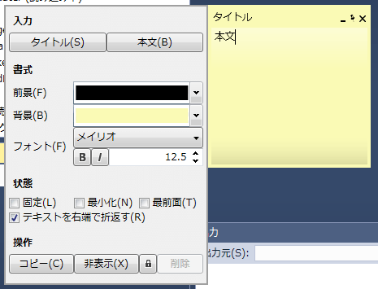

ちょっとしたメモ書きなんかをデスクトップに貼り付ける付箋機能です。
各種入力は自動保存されます。
非表示と削除
非表示にした場合は通知領域のコンテキストメニューから復帰可能です。
削除した場合は復帰することは出来ません。
削除するには をクリックしてから削除をクリックしてください。
をクリックしてから削除をクリックしてください。
をクリックしてから削除をクリックしてください。
固定
固定にチェックを入れるとノートの移動や位置設定、本文入力ができなくなります。
これはマウスカーソルによる意図しない操作を防ぐためのもので、操作ウィンドウからの各種操作は固定の有無に関わらず有効です。